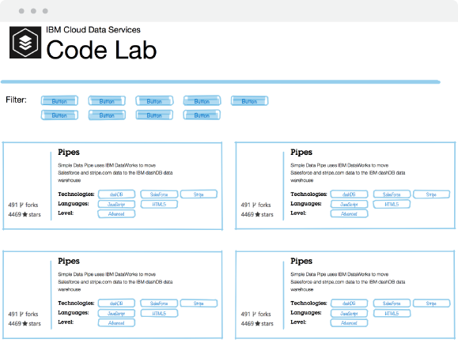

A website that houses all of IBM Cloud Data Services github projects.
I designed a stand alone website that housed all of IBM Cloud Data Services github projects. On the main page, there would exist featured project all displaying statistics (i.e., stars. views) and tags for each. Using the colors from the Cloud Data Services Website, it could serve as an extension of the main website adopting the same voice.

In the final design, we went with the feedback and separated each step into it’s own tab. This allowed for a more clear and completed process for the user to go through. Instead of the Configuration tab, we extracted these and created four steps/tabs: Connect, Pick Tables, Schedule, and Activity.